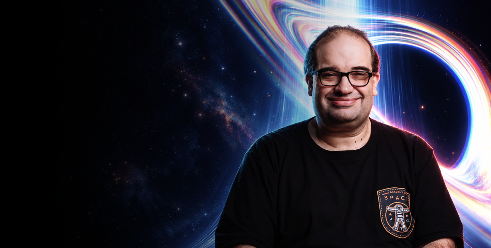
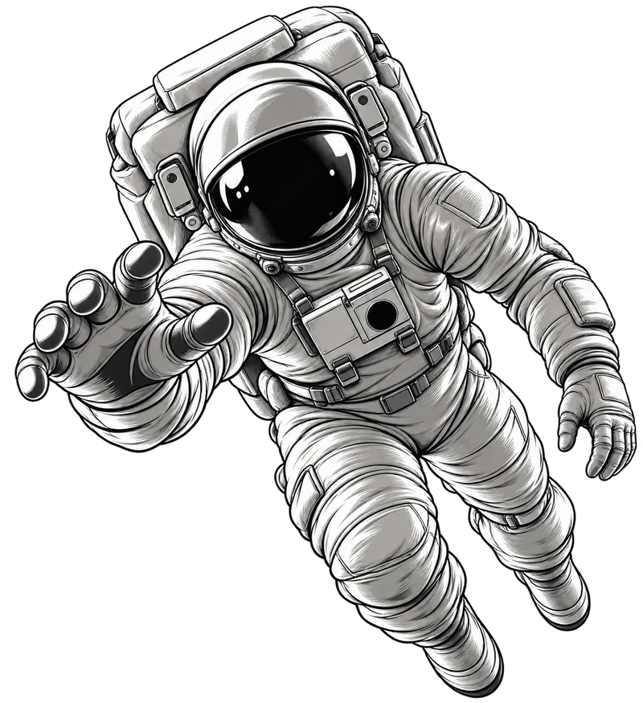

01 / 09
História da Astronomia
- Astronomia Pré-histórica
- Astronomia Antiga
- Astronomia Clássica
- Astronomia Moderna
- Divulgadores da Astronomia

“Salve Salve amigos da Astronomia em todo Mundo! Meu nome é Sérgio Sacani, criador do Space Today, e vamos juntos compreender o Universo no curso Big Bang!”
R$ 49/mêsno plano anual
A Astronomia contempla disciplinas desde a cosmologia, que estuda o nascimento, a evolução e o destino do Universo, a astrofísica, as propriedades físicas dos objetos celestes, até a discussão sobre a existência de vida em outros cantos do Universo.
Quem nunca se perguntou de onde viemos ou para onde vamos?
A resposta está na astronomia.

Pensando em como levar o estudo da astronomia para os brasileiros, desenvolvemos uma metodologia de ensino fácil de entender, mesmo sendo um conteúdo complexo e aprofundado sobre astronomia.
STEM é a sigla inglesa para Science, Technology, Engineering and Mathematics (Ciência, Tecnologia, Engenharia e Matemática).
Science
Ciência
Technology
Tecnologia
Engineering
Engenharia
Mathematics
Matemática
Esse é o método de educação do futuro, onde os temas são abordados de forma integrada e multidisciplinar.
Os países mais desenvolvidos do mundo já possuem o seu currículo escolar baseado no STEM, e em muitas escolas do Brasil essa abordagem está começando a ser feita.
Eu sou Sérgio Sacani Sancevero, formado em geofísica pelo IAG da USP, com mestrado em engenharia do petróleo pela UNICAMP e doutorado em geociências pela UNICAMP. Estou à frente do canal Space Today, o maior canal sobre astronomia do Brasil.
Mas o que um geofísico e engenheiro de petróleo tem a ver com o espaço?
Bem, assim como você, um dia eu também não sabia absolutamente nada sobre astronomia. Essa vontade de aprender mais sobre o universo nasceu em 1986, na passagem do cometa Halley. Desde então passei a estudar astronomia e me dedico muito à divulgação científica. Já fui professor universitário na UNICAMP e, por isso, acredito ter aqui a didática certa para passar tudo que você precisa saber sobre astronomia de forma fácil e rápida.
Nos últimos anos, ajudei muitas pessoas a aprender mais sobre a astronomia e a construir uma carreira nessa área — e estou aqui para ajudar você a fazer o mesmo.
O Big Bang foi criado para…
da Astronomia e da Exploração Espacial
de qualquer idade
do Ensino Infantil, Fundamental, Médio e Superior
e profissionais de comunicação que querem se especializar
amadores
de planetários
de museus
de disciplinas enquadradas no STEM
de Astronomia
…e literalmente qualquer pessoa que queira ter uma visão mais científica e crítica do mundo.
Nenhum, além do seu interesse em astronomia. Você não precisa ter nenhum conhecimento prévio e poderá aprender no seu próprio ritmo.
Veja o que você vai aprender no curso Big Bang.
01 / 09
02 / 09
03 / 09
04 / 09
05 / 09
06 / 09
07 / 09
08 / 09
09 / 09
Você entenderá:
Por que sondas espaciais foram enviadas para estudar planetas como Saturno.
Por que temos um verdadeiro fascínio pelo planeta Marte.
Por que os cientistas procuram amostras de poeira na cauda de um cometa.
O que os astrônomos querem dizer quando aparecem no jornal ou na televisão para relatar suas últimas descobertas.
O papel dos grandes telescópios no Arizona, Havaí, Chile e Califórnia, e dos radiotelescópios no Novo México, Porto Rico, Austrália e outros observatórios ao redor do mundo.
Vamos juntos!
Por apenas
12x deR$ 49
ou R$ 490 à vista
Parcelamento somente no cartão, em até 12x.
Veja a opinião espontânea de quem já fez o Big Bang e agora faz parte da nossa Comunidade Astronômica!
Tudo o que você precisa saber antes de começar.
Sim, no Discord — uma plataforma de comunicação que é febre no momento graças à sua capacidade de organizar conteúdo e, ao mesmo tempo, manter o fluxo de informações. É muito semelhante aos aplicativos de comunicação de grandes empresas, como o Slack. Nossa comunidade astronômica está lá, e você vai fazer parte dela.
40 horas.
Claro! O curso foi feito justamente para os leigos e apressados.
Sim, temos um módulo sobre telescópio.
Imediatamente após a inscrição, você receberá os dados de acesso, e a cada semana entrará no ar um novo módulo.
Sim, em cada aula você será desafiado pelo nosso Quiz!
1 ano de acesso a partir da compra — tempo mais do que suficiente para assistir ao curso. Após esse período, você poderá fazer a renovação, e costumamos criar ofertas de renovação bem acessíveis.
Sim, de 40 horas.
O certificado de conclusão é gerado quando você indica ter finalizado cada aula. Em cada aula há um botão para avisar que você a finalizou. Concluindo todas as aulas, o certificado é gerado automaticamente.
Sim, o conteúdo do Big Bang pode ser usado para emissão de certificado de extensão em uma faculdade parceira. Existe um pequeno custo adicional nesse processo com a faculdade, mas o Sérgio Sacani vai falar mais sobre isso dentro do curso para quem se interessar pela extensão.
Para ter o certificado de conclusão, não. Mas, caso deseje também o certificado de extensão, você poderá aproveitar o conteúdo do Big Bang para obter seu certificado de extensão em Astronomia com ênfase em Planetologia por uma faculdade parceira. Existe um pequeno custo adicional nesse processo com a faculdade, e o Sérgio Sacani explica mais sobre isso dentro do curso.
Não. O parcelamento é somente no cartão, em até 12x.
Ao clicar no link, na tela de checkout, observe no canto superior direito a opção “Selecionar País”. Basta selecionar o seu país ou, caso não esteja na lista, selecionar “others”.
Curso BIG BANG + Grupo de Alunos + Lives Exclusivas com Sérgio Sacani
Por apenas 12x de R$ 49 ou R$ 490 à vista